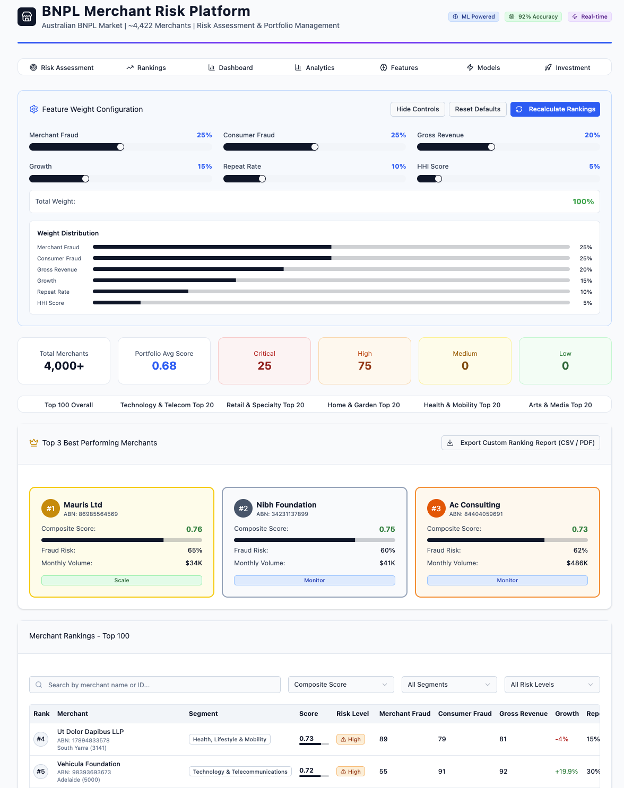
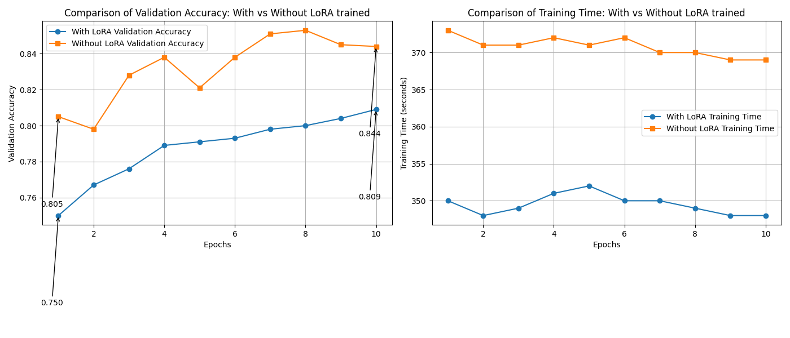
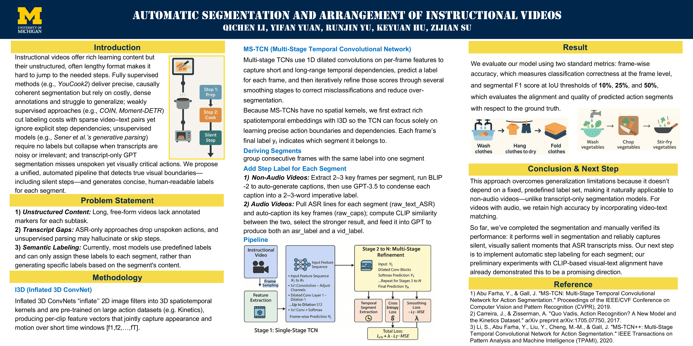
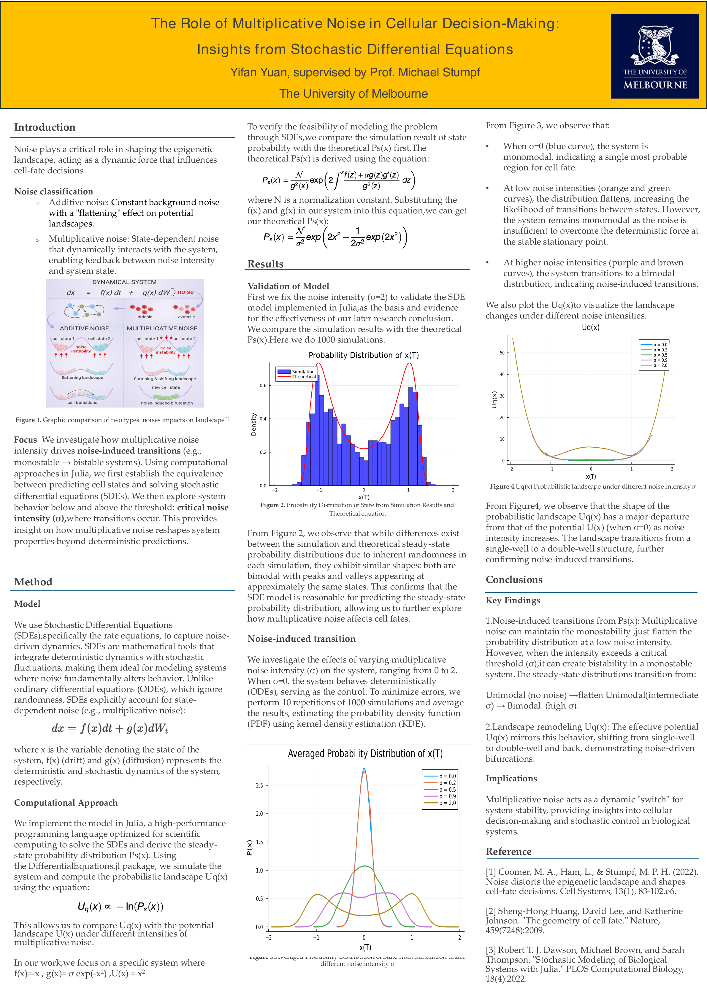

Carnegie Mellon University
M.S. in Intelligent Information Systems, School of Computer Science
Pittsburgh, PA
MIIS Student at CMU LTI
Hi, I am Yifan Yuan, a master's student in Intelligent Information Systems at Carnegie Mellon University's School of Computer Science. My work sits at the intersection of machine learning, agentic AI systems, and data-driven decision support.
I previously worked as a Machine Learning Intern at Schneider Electric and have experience across multi-agent systems, monitoring systems, talent intelligence, large-scale data processing, interactive dashboards, and applied ML for operational decision-making.
I am currently interested in agentic reinforcement learning, LLM agents, post-training, retrieval-augmented systems, and reliable AI systems for real-world workflows.
M.S. in Intelligent Information Systems, School of Computer Science
College of Engineering exchange program. GPA: 3.97/4.0. Coursework: graduate machine learning, statistics, stochastic processes, nonlinear optimization.
B.S. in Data Science. WAM: 87/100, H1, GPA: 3.917/4.0.
AI Product Development Intern
Worked on HR recruitment agents and a talent intelligence network for enterprise workforce planning.
Machine Learning Intern
Worked on multi-agent virtual factory operations and a monitoring system for production anomaly detection.
Research Assistant
Supported healthcare operations research on antenatal care delivery.
Data Analysis Intern
Worked on large-scale data processing and real-time interactive dashboards for operational analytics.
Representative applied AI and research projects are highlighted.

An end-to-end applied ML system for merchant fraud risk and portfolio ranking under extreme label sparsity, with a prototyped interactive platform for configurable ranking and portfolio review.

A study of parameter-efficient transfer learning across CNN and Transformer architectures.

A multimodal pipeline for detecting meaningful instructional video boundaries and generating concise step labels.

A computational study of how state-dependent noise reshapes probabilistic landscapes in biological systems.